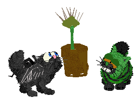
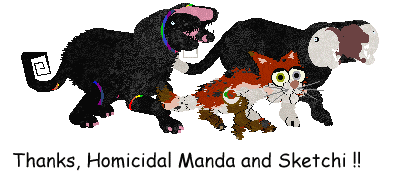
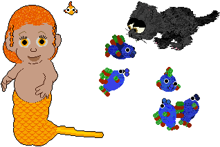
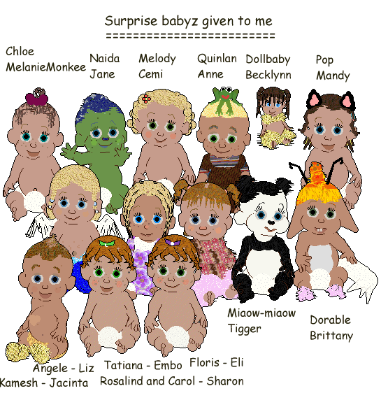
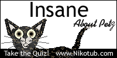
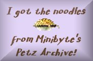

I was glad I could help, Manda; it's
wonderful to feel like a kind of "new-breedz midwife", LOL!
Beautiful gifts...
~~~~~~~~~~~~~~~~~~~~~~~~~~~~~
Well, it's near the end of 2005 already and I didn't manage
to get the birthday page up yet. Never mind, I've been enjoying the gifts
myself anyway and one day perhaps I'll get them up for y'all to see on my
2004-2005 pages :-) But meanwhile, here's Phantarella playing with her best
friend, Insanity (thanks, Meer!). The two of them are vey unsure of my very
latest pet, but I've told them they needn't worry -- Beeble won't eat them.
Beeble, the carnivorous plant, was crafted by Signofish and sent to me by
Minibyte.

Also in 2005 this special trio was hexed for me. I made this banner to use
as a sig at the Shiznit forum, and now that is gone I display it here with
pride

and here are three lovelies -- one special babyz sent out of
the blue and two (yes, two!) petz from Wardah Ahmar. The School of Fish petz
is great fun to play with, you can see that Farana is fascinated. GoldaFishe
has a constant companion fish, and her tail makes clever use of
polygons.

Several babyz hexers have been very kind in surprising me with special
babyz, and each one sparks a lovely memory. Three were sent as birthday
gifts, one commemorates poor little Pop, another is made to remind me of my
childhood bear... Well, they all have a special meaning to me.

Apart from the above, which were made for me as special gifts, I have been
very lucky in being allowed to adopt many petz and babyz over the years. All
are doing well, still in my game and much enjoyed. I've not lost or deleted
a single one, and I never intend to :-)
In basic date order, below you can click to see beautiful
picture-gifts:
given to me in the years 2004-2005
People were very kind to me over the earlier years of this site's existence,
and the lovely flowers and picture gifts built up to the point where I got
into a mess over how to display them. In the end, I decided to keep the
pages that I made previously; you can get to them at the link below:
Flowers given to me before 2004
I love them all, each one is special to me because it means that I've made
people happy with what I enjoy doing. Thank you all!

Hah, watch out -- I have Minibyte's wet noodles... Mwahahahaaaa!

Member of the BCCA.
The BCCA is now sadly defunct, but I keep this here as a memento. Megan and
Jesslan, may you prosper as you move on in life.
.